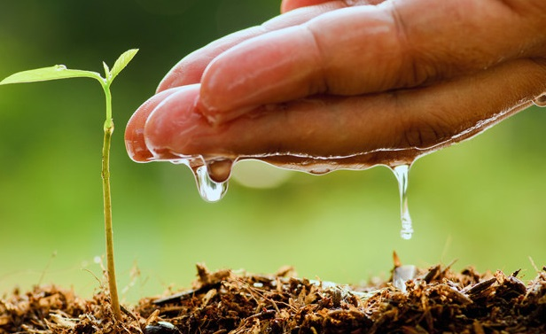
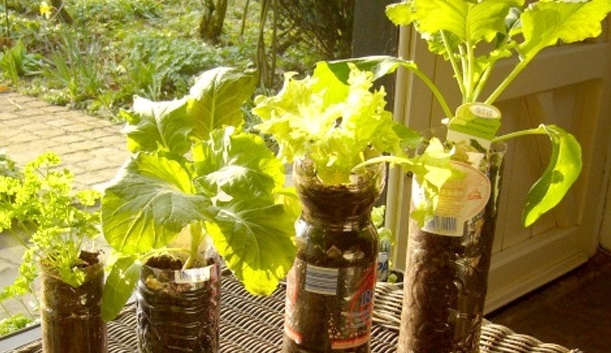
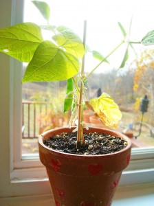
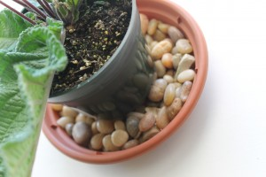
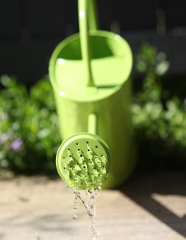

نصائح عامة للعناية بالنباتات

الضوء، ودرجة الحرارة، ونسبة الرطوبة، وكذلك معدل ري النبات، وانتهاءً بالسماد المناسب للنباتات من حيث نوعيته وكميته وعدد مرات تسميد النبات به.
الضوء

وهكذا قرِّبْ النبات المحب للضوء من مصدر الضوء وأبعد النبات غير المحب للضوء الساطع من مصدر الضوء بتوزيع يضمن لكل نبتة أن تجد حاجتها من الضوء هذا مع العلم أن بعض النباتات تحتاج لفترة ضوئية طويلة كي تزهر بينما بعضها الآخر يحتاج لفترة ضوئية قصيرة كي يزهر ومن هذا كله يظهر لنا مدى تأثير الضوء على النبات.
درجه الحراره

ومن البديهي أن تجنب نباتاتك مصادر الحرارة كالفرن أو تيارات الهواء الباردة أو الحارة كتيار جهاز التكييف، وكذلك أبعد النباتات عن النوافذ خلال المساء في فصل الشتاء حتى لا يؤثر عليها البرد القارس. الرطوبة
رطوبة النباتات
الرطوبة من العوامل المحددة لنشاط النبات وازدهاره، فبعض النباتات محب للرطوبة كي يعيش بشكل طبيعي، وبعضها محب للرطوبة لكنه يمكن أن يزدهر بدونها، وبعضها ينشط في الجو الأقل رطوبة ويزدهر نموه، طبعاً نعلم أن نسبة الرطوبة تختلف من مكان لآخر ومن فصل لآخر فنسبة الرطوبة في المدن الساحلية مثلاً أكثر بكثير منها في المناطق الصحراوية، وكذلك تختلف عن نسبة الرطوبة في المرتفعات مثلاً عنها في الأماكن المنخفضة وهكذا.

رش النبتة برذاذ الماء خلال الفترات الجافة والحارة وتكرر خلال اليوم الواحد حسب الحاجة والجو السائد. وضع وعاء النبات فوق صحن يحتوي على حصى مبلل وعدم ترك الحصى يجف، وأحيانا نضع الوعاء في صحن عمقه عدة سنتيمترات أسفله يحتوي ماءً وأعلى الماء طبقة غربالية يستقر عليها وعاء النبتة للسماح للرطوبة كي تتسرب عبر الثقوب للوعاء المحتوي على النبتة. نضع النبتة بوعائها في وعاء أكبر ثم نملأ الفراغ بينهما بالتربة الزراعية (البيتموس) الرطبة.
الري
كما أن الماء ضروري لحياة النبتة فهو خطر أيضاً على حياتها في الأولى يقتلها العطش وفي الثانية يقتلها الغرق، ولا بد من التوسط ومراعاة حاجة النبات كي يعيش معك بشكل مثالي ولفترة أطول.
توجد عدة طرق لإرواء النباتات وقبل الحديث عنها لا بد أن نتحدث عن الوعاء الذي يوجد فيه النبات، فنقول إن الوعاء الذي يوجد فيه النبات لا بد أن يكون محتوياً على قنوات تصريف (ثقوب من الأسفل) أو على الجوانب أسفل الوعاء وإن كنت أميل بقوة للأولى كي لا يكون هناك مجال لتعفن الجذور بسبب تجمع مياه الري في الأسفل ولو بكميات قليلة. وكذلك من مكونات الوعاء صحن يستوعب الوعاء لو وضع فيه ويكون متناسقاً معه في الشكل والغرض منه استقبال الماء الزائد أثناء الري حتى لا يفسد الأثاث وليكون مصدراً لترطيب النبتة ويفضل أن يكون هذا الصحن محتوياً على حصى متناسق الحجم يستقر عليه الوعاء وذلك لتهوية النبتة، فالماء أسفل يتبخر ويصل للجذور عبر الفتحات السفلية والنبات يجد تهوية بشكل جيد.

وعاء للري بفوهة تشبه الدش
يتم الري بسكب الماء مباشرةً على حوض النبتة وبعيداً عن الساق ما أمكن (لتجنب تعفن الساق) ويستحسن استخدام وعاء للري بفوهة تشبه الدش كي نحافظ على شكل التربة متساوي وليتم توزيع الماء بشكل منتظم على السطح ولإتاحة الفرصة للتربة كي تتشرب الماء ولا يتسرب بسرعة لخارج الوعاء قبل أن يستفيد منه النبات.
ويمكن الري من الأسفل بسكب الماء في الصحن الذي تحت الوعاء مباشرةً فينتقل الماء بالخاصية الشعرية وتتشربه التربة فيصل الجذور.
كلا الطريقتان صحيحتان ولكن تكون إحداهما أفضل من الأخرى حسب نوع النبات نظراً لاختلاف حاجة النبات ولذلك دائماً نقول ونكرر لابد أن تعرف نباتك جيداً قبل شرائه وإن اخترت معرفته بالتجربة والخطأ فأنت وذاك ولكن تحمل عناء ذلك!
يتساءل كثير من مربي النباتات الداخلية كيف يؤمن لها الري أثناء غيابه الذي قد يستمر أسبوعاً أو أكثر؟ والحل الأفضل دائماً أن تترك النباتات مكانها وتوصي من يمكنه دخول البيت وسقيها لو في الأسبوع مرةً واحدة.
فإن لم تجد فهناك وسائل متعددة نلجأ إليها لري النباتات خلال هذه الفترة وهي كالتالي:
توجد طرق كثيرة ومتعددة حديثة تستخدم فيها تقنية الكهرباء والمؤقتات (التايمر) وهذا ليس موضوعنا فنحن نبحث عن طرق بسيطة غير مكلفة، ويمكنك اختراع طريقتك بنفسك باستخدام خامات من البيئة، فالبعض يستخدم قنينات الماء البلاستيكية الفارغة بطريقة معينة تؤمن حاجة النبات لفترة قد تصل إلى أسبوع أو أكثر، كما أنه يوجد اختراعات لأوعية تدفن مع النبات وتكفيه لشهر أو أكثر.
نجمع النباتات المتماثلة حجماً ونضعها على حوض الغسيل (المجلى) فوق قطعة من قماش طرفها تحت جميع النباتات والطرف الآخر متدلي في حوض الغسيل، ثم نقفل حوض الغسيل بسدادته ونملأه بالماء ونغطيه للتقليل من التبخر، وبهذه الطريقة ينتقل الماء من الحوض عبر القماش بالخاصية الشعرية لأسفل الأوعية النباتية ومنها إلى تربة هذه الأوعية ويوفر لها جوا رطباً يكفيها لحين عودتكم سالمين بإذن الله تعالى.
وهناك طريقة أخرى مشابهة لكنها تخدم كل نبات على حدة وفيها يتم وضع إناء بارتفاع وعاء النبتة نفسه ويملأ بالماء ويوضع جوار وعاء النبتة ثم يوضع خيط قماشي مثل خيط من الخيش (القنب) يتدلى أحد طرفيه إلى أسفل الإناء والطرف الآخر يلف حول ساق النبتة فوق التراب. وبهذه الطريقة يصل الماء بالخاصية الشعرية للنبتة ولفترة طويلة نسبياً. ويستحسن تغطية حوض الماء في الطريقتين الأولى والثانية بغطاء يمنع التبخر ليبقى الماء أطول فترة ممكنة.
بقي أن نتحدث عن كمية الري للنبتة الواحدة بعد أن بينا طرق الري وكيفيته أعلاه، فنقول أن كمية الري الذي يسقى للنباتات تختلف حسب (شخصية النبات) حجمه ومدى محبته للرطوبة ومدى تحمله لها ….الخ من جوانب شخصية النبتة. وكذلك ما نوع الماء الذي نسقي فيه النبات؟ وما مصدره؟
بالنسبة للماء المستخدم للري فأغلب الناس يستخدم ماء الحنفية المنزلي وهذا هو المصدر السهل القريب، والمشكلة هنا تكمن في أن بعض النباتات حساسة جداً لمادة الكلور التي توضع مع مياه المشروع لتعقيمها من الجراثيم! فيستحسن في هذه الحالة أن لا تسقى النبتة من ماء الحنفية مباشرة ويفضل أخذ كمية من الماء في وعاء خارجي قبل السقي بحوالي الأسبوع لترك أكبر فرصة للكلور أن يتبخر ويقل في الماء وبالتالي يقل تأثيره السلبي على النبتة وكلما كان مصدر الماء طبيعي كلما كان أفضل للنبات.
أما كمية الماء التي تروى بها النبتة فنقول كقاعدة عامة يجب ألا تكون التربة غاصةً بالماء وكأنها مستنقع ولا جافةً جداً والتوسط جيد لأغلب النباتات، فكيف نقيس ذلك ونعرفه؟ مجرد وضع أناملك على سطح التربة تستطيع أن تحكم هل هو رطب أم لا وبالتالي تقرر الري أو تؤجله، لكن بعض النباتات تحب الرطوبة العالية وعكسها نباتات أخرى تحب الجفاف لفترات محدودة… نعود ونكرر قولنا أنه لا بد أن تعرف شخصية نباتاتك فذلك يساعدك كثيراً على العناية بها. السماد
3 ردود على "الموضوع "